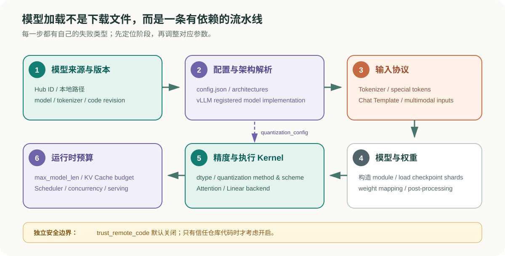

第 07 章 · 安装、模型接入与生成控制
模型加载与配置：从模型身份到运行时参数
模型能下载，不代表它能被正确解析；权重能装进 GPU，也不代表上下文和并发配置合理。本章沿着真实加载路径，把模型身份、Tokenizer、权重精度、量化 Kernel 和运行时显存预算拆开理解。
想象你拿到一个模型仓库 ID，准备执行 vllm serve。vLLM 并不是把仓库里的某个权重文件直接塞进 GPU：它还要识别模型架构、读取配置、准备 Tokenizer、构造模型模块、加载权重分片、选择精度与量化实现，最后才进入 KV Cache 和 Scheduler 的容量规划。配置出错时，先判断错误发生在哪一层，比随机修改参数有效得多。
读完这一章，你应该能够
- 区分模型权重、模型配置、Tokenizer、Chat Template 和模型代码的版本身份。
- 解释 vLLM 如何根据
config.json中的架构信息选择模型实现。 - 区分权重 dtype、权重量化方法、量化 scheme、执行 Kernel 和 KV Cache dtype。
- 理解
max_model_len、gpu_memory_utilization与kv_cache_memory_bytes的资源边界。 - 建立可复现的模型加载清单，而不是依赖一组来历不明的“最佳参数”。

quantization_config 读取，而不是仅由权重加载决定。7.1 模型加载的完整路径：不要把它理解成一次文件下载
可以把一次模型启动拆成六步。它们不是六个完全独立的开关，而是前后相依的检查链：
- 定位模型：从 Hugging Face Hub、本地目录或受支持的模型存储源找到配置与权重。
- 解析配置：读取模型配置，识别架构、层数、注意力结构、上下文能力和量化元数据。
- 准备输入协议：加载 Tokenizer，并确认 Chat Template 与模型训练时的消息格式一致。
- 构造模型：vLLM 选择匹配的模型实现，初始化模块和参数结构。
- 装载权重：读取 checkpoint 分片，把权重映射到模型参数；必要时执行在线量化或权重后处理。
- 建立运行时：选择可用的 Attention / Linear Kernel，规划 KV Cache，初始化 Scheduler 和服务入口。
如果报错发生在第二步，调整 KV Cache 显存比例通常没有帮助；如果报错发生在第五步，修改 Chat Template 也不能解决权重键名不匹配。先定位失败阶段，再处理对应配置。
7.2 先锁定模型身份：model、tokenizer 和 revision
一个可复现的模型部署，至少要记录四种身份：
| 身份 | 它决定什么 | 需要记录的内容 |
|---|---|---|
| Model revision | 模型配置和权重来自哪个仓库版本 | 模型 ID、本地路径或 Hub commit / tag |
| Tokenizer revision | 文本如何切分成 token，以及特殊 token 的 ID | Tokenizer 仓库与 revision |
| Code revision | 需要执行的模型自定义代码来自哪个版本 | 代码仓库与 revision |
| vLLM revision | 加载器、模型实现、Kernel 和参数默认值来自哪个版本 | vLLM release / commit、PyTorch 和驱动版本 |
在当前配置实现中，revision、tokenizer_revision 和 code_revision 是分开的字段。Tokenizer 默认可以跟随模型 revision，但如果 Tokenizer 来自另一个仓库，就应该单独固定它的版本。仅记录一个可移动的模型分支名，无法保证未来还能下载到完全相同的文件。
# 示例：固定模型、Tokenizer 与模型代码版本
vllm serve org/model-name \\
--revision <model-commit-or-tag> \\
--tokenizer-revision <tokenizer-commit-or-tag> \\
--code-revision <code-commit-or-tag>对聊天模型，还要检查 Chat Template。模型权重加载成功，只说明参数可以被装入；如果模板把 system、user、assistant 消息序列化成错误的特殊 token，模型仍可能出现角色混淆、停止条件错误或输出格式异常。
安全边界：当前 trust_remote_code 默认是 false。只有在确认模型仓库来源可信、理解其自定义代码行为后，才考虑开启 --trust-remote-code。它不是一个普通的“兼容性优化开关”，而是允许加载远端仓库中的代码。
7.3 架构解析与权重加载：config.json 为什么如此重要？
vLLM 的模型解析会检查 Hugging Face 兼容配置中的 architectures 字段，再寻找 vLLM 已注册的对应实现。它不是只根据模型仓库名字猜测模型类型。
解析失败常见于三种情况：
config.json缺少architectures字段。- 第三方仓库使用了 vLLM 尚未登记的架构别名。
- 同一个架构名被不同模型复用，导致配置与实现无法唯一对应。
如果问题确实来自配置中的架构标记，可以通过 hf_overrides 覆盖配置字段。但这只是在修正模型身份描述，并不会凭空给 vLLM 增加一个尚未实现的模型架构。
from vllm import LLM
llm = LLM(
model="cerebras/Cerebras-GPT-1.3B",
hf_overrides={"architectures": ["GPT2LMHeadModel"]},
)解析成功后，加载器还要把 checkpoint 中的权重名映射到模型模块。当前默认加载器支持从模型源读取权重分片，并通过权重迭代器处理 Safetensors 等文件；随后还可能进行在线量化、权重重排或 Kernel 所需的后处理。
交互观察：同一个“模型加载失败”可能发生在哪一层？
配置解析失败：检查 config.json、architectures、模型支持列表与 hf_overrides。此时 GPU 显存预算通常还不是主因。
Tokenizer 或模板失败：检查 Tokenizer revision、特殊 token、Chat Template，以及模型是否需要专用 tokenizer backend。
权重装载失败：检查 checkpoint 文件、分片索引、参数名称、权重量化元数据、磁盘空间和仓库访问权限。
Kernel 不匹配：检查量化 scheme、GPU 架构、Attention / Linear backend 和当前 vLLM release 的支持矩阵。
7.4 dtype、量化方法与 Kernel：三个层次不要混为一谈
先理解 dtype
dtype 主要描述模型权重与计算所使用的数据精度。当前 vLLM 的 dtype="auto" 会根据模型配置选择精度：配置为 FP32 或 FP16 的模型使用 FP16；配置为 BF16 的模型使用 BF16。它不是“自动选择所有可能精度中最快的那个”。
| 配置 | 含义 | 注意事项 |
|---|---|---|
auto | 按模型配置解析精度 | 结果受 checkpoint dtype 和版本行为影响 |
float16 | FP16 权重 / 计算精度 | 需要硬件与模型实现支持 |
bfloat16 | BF16 权重 / 计算精度 | 动态范围更适合部分大模型推理场景 |
float32 | FP32 精度 | 通常显存开销明显更高，需评估 Kernel 支持 |
再把量化拆成 method、scheme 和 kernel
vLLM 当前量化文档刻意区分三个概念。理解这张表，比背诵 AWQ、GPTQ、FP8 等名字更有用：
| 概念 | 回答的问题 | 例子 |
|---|---|---|
| Method | 用什么加载实现读取量化 checkpoint？ | compressed-tensors、modelopt、quark |
| Scheme | 某类 Tensor 的数值格式与 scale 如何组织？ | W4A16、W8A8、FP8、MXFP4 |
| Kernel | 当前设备上由哪段代码执行这个 scheme？ | Marlin、Humming、其他 Linear / MoE backend |
W4A16 表示权重为 4 bit、激活为 16 bit；W8A8 则表示权重与激活都采用 8 bit 表示。W4A16 主要压缩权重存储，并不意味着矩阵乘法自动变成 4-bit 激活计算。真实每参数占用还包含 scale、分组信息和对齐开销，所以不能把“4 bit”直接等同于整个模型显存精确缩小四倍。
对于已经量化的 checkpoint，vLLM 通常从模型配置中的 quantization_config 读取方法；对于未量化权重，也可以通过在线量化配置指定目标 scheme。无论是哪种方式，都必须确认当前硬件和选中的 Kernel 能执行对应格式。某个方法被识别，不等于所有设备上都存在相同速度的 Kernel。
最容易混淆的一点：权重量化和 KV Cache 量化是两套独立设置。--dtype 不能替代 --kv-cache-dtype；--quantization 也不等于把运行时 K/V 自动压缩成 FP8。KV Cache dtype 和其 scale / backend 要在第 08 章单独检查。
7.5 上下文和显存预算：三个参数各管一件事
模型成功加载后，还要确定每个请求允许多长、vLLM 实例能使用多少设备内存，以及 KV Cache 是否采用显式字节预算。
max_model_len：单个序列的上下文上限，包含 Prompt 和生成部分，不是只限制输入 Prompt。若未指定，vLLM 会从模型配置推导；-1/auto会尝试选择能放入 GPU 内存的最大长度。gpu_memory_utilization：当前 vLLM 实例的设备内存预算比例，不是整张 GPU 的全局锁，也不保证把这部分内存全部变成 KV Cache。kv_cache_memory_bytes：按每张 GPU 显式指定 KV Cache 字节预算。当前配置实现中，一旦设置该值，就会忽略gpu_memory_utilization的自动缓存预算逻辑。
一个容易被旧教程误导的地方是 gpu_memory_utilization 的默认值。当前上游代码中，启用 extensible KV Cache 时，未指定该值的默认预算为 1.0；不走该路径时则为 0.92。这个差异与平台和显存规划路径有关，不能把某个数字当成所有版本、所有设备的固定推荐值。
# 仅示意参数关系；实际值应根据模型和设备测量
vllm serve <model-id-or-local-path> \\
--max-model-len <prompt-plus-output-limit> \\
--gpu-memory-utilization <per-instance-budget>
# 也可以显式指定每张 GPU 的 KV Cache 字节数；
# 设置后会覆盖 gpu_memory_utilization 的 KV Cache 自动预算逻辑
vllm serve <model-id-or-local-path> \\
--kv-cache-memory-bytes <bytes-per-gpu>不要一开始就把上下文长度、并发数和显存比例都拉到最大。它们相互影响：上下文越长，每条活跃请求需要保存的 K/V 越多；并发越高，活跃请求总缓存需求越大；权重、CUDA Graph、运行时工作区和通信缓冲区也会占用设备内存。
7.6 建立可复现配置：把“能跑”变成“可重现”
建议每次部署至少记录以下信息，并把它们作为服务发布清单的一部分：
- 模型 ID / 本地路径、model revision、Tokenizer revision 和 code revision。
- vLLM release / commit、Python、PyTorch、驱动、CUDA / ROCm 和 GPU 型号。
- 模型配置中的 architecture、原始权重 dtype、量化 method / scheme。
- 实际选用的 Attention / Linear backend，以及启动日志中的兼容性警告。
max_model_len、KV Cache dtype、KV Cache 字节预算和并发配置。- 代表真实业务的 Prompt 长度、输出长度、并发和延迟指标。
调参时一次只改变一个主要变量。比如先固定模型与 dtype，再调整上下文；确认 KV Cache 容量后，再逐步增加并发。这样每一次性能变化都能追溯到一个明确的原因。
常见问题与本章自检
| 现象 | 优先检查 | 不要先做什么 |
|---|---|---|
| 找不到模型架构 | architectures、支持模型列表、仓库配置 | 不要先调 GPU 显存比例 |
| 模型加载后聊天格式异常 | Tokenizer revision、特殊 token、Chat Template | 不要把它直接判断为权重损坏 |
| 量化 checkpoint 无法启动 | quant_method、scheme、硬件和 Kernel 支持 | 不要只换 dtype 就期待兼容 |
| 长上下文 OOM | max_model_len、KV Cache 预算、其他进程和运行时工作区 | 不要无条件把显存预算设为 1 |
| 量化后速度没有提高 | 实际执行的 Kernel、激活精度、batch 形态与硬件支持 | 不要把权重变小等同于推理一定变快 |
- 为什么固定模型 revision 还不一定能完全固定 Tokenizer？
- 为什么
architectures修正不能让一个尚未实现的模型架构自动获得支持？ - W4A16 中的 4 和 16 分别描述什么？为什么它不代表整个模型精确缩小四倍？
- 为什么设置
kv_cache_memory_bytes后，不应该再把gpu_memory_utilization当成 KV Cache 的有效预算旋钮？
下一章我们从模型结构出发，把 KV Cache 的每 token 字节数推导出来，再把理论需求与 vLLM 实际可分配的 Block Pool 容量对应起来。
参考资料与源码入口
- vLLM, Model Resolution：从
config.json的architectures字段解析模型实现。 - vLLM, Supported Models：查看架构支持与 Transformers modeling backend 的边界。
- vLLM, Engine Arguments：模型、Tokenizer、dtype、上下文与显存参数入口。
- vLLM, Quantization Methods and Schemes：method、scheme、kernel 的区别。
- 源码：ModelConfig、CacheConfig、DefaultModelLoader。
本章的版本敏感配置按上游 vLLM commit 0bf9c07376a4091627e6cb50dd85464361db452c 审校。CLI 默认值和硬件支持会变化；实际部署请以安装版本的 Engine Args 与启动日志为准。